Дизайн
Table of Contents
- 1 Требования
- 2 Основные подсистемы
- 2.1 Игра (игровая подсистема)
- 2.1.1 Требования
- 2.1.2 Usecase
- 2.1.3 Главный цикл
- 2.1.4 Условия выигрыша
- 2.1.5 Проблемы которые надо решить - http://roguebasin.roguelikedevelopment.org/index.php/Code_design_basics
- 2.1.6 Save / Load - http://roguebasin.roguelikedevelopment.org/index.php/Save_Files
- 2.1.7 Общие рекомендации по проектированию - http://pages.cs.wisc.edu/~psilord/lisp-public/option-9.html
- 2.2 Интерфейс
- 2.3 Мир
- 2.4 Время
- 2.5 Объекты
- 2.6 Строительство
- 2.7 Раскопки
- 2.8 Существа
- 2.9 Механизмы и аппараты
- 2.10 Вещества / материалы
- 2.11 Цивилизации, города, поселки - генерация
- 2.12 Квесты
- 2.1 Игра (игровая подсистема)
- 3 Полезная инфа
- 4 Хаотичный список фич и идей
1 Требования
Здесь описаны основные решения, которые в процессе разработки не подлежат изменению.
1.1 Требования к конечному продукту
1.1.1 Приоритетные
- Однопользовательская фэнтези-стратегия, по совместительству песочница и симулятор бога.
- Мир генерируется случайным образом, кроме того объекты, персонажи, свойства и материалы, тоже могут создаваться случайным образом (учитывая ряд ограничений конечно же). Объемный мир.
- df-подобная по части безумно высокой детализации игрового мира.
- Практически полное отсутствие игровой документации. В справке будут описаны лишь азы по взаимодействию с интерфейсом.
- Сложная система крафта/производства.
- Противник в виде других популяций, которые регулярно организуют осады и рейды.
- Сложная экономическая составляющая (корованы и так далее).
- Сложная социальная составляющая популяция (отношения между особями, эмоции, психологическое состояние).
- Сложная система существ. Никаких хитпоинтов - максимально реалистичная боевая система и система повреждений.
- Общие концепции рогаликов.
- Политическая составляющая (отношения между цивилизациями, послы, заговоры, нобли, мандаты).
- Открытые исходники и открытые игровые ресурсы. MIT/BSD лицензии или GPLv3 - пока не ясно.
- Желательно избежать использования магии.
- Наличие крупных (на порядки крупнее обычного юнита) персонажей.
- Наличие встроенной lisp-среды.
- Наличие системы вызова команд в духе emacs (M-x <command> - с автодополнением).
- Отказ от какого-либо влияния "реального" времени на игровое должен заметно упростить процесс разработки.
1.1.2 Менее приоритетные
- Ведутся записи исторических событий, многие вещи очень детально логгируются, например битвы.
- Мультиязычность (Русский и Английский минимум). Должна быть гибкая система добавления локализаций (сразу стоит отметить, что предполагается два вида локализаций: простая и сложная. Для каждой локализации в необходимом месте возвращается предварительно заданная строка текста согласно переданному в функцию коду локализации (ru, eng, de). Сложная - движок для морфологического анализа/синтеза, правильная генерация числительных и другие моменты, связанные с естественными языками. Понадобяться part of speech tagger'ы и другие подходы для генерации текста на естественном языке.).
- Химическая подсистема (возможность вступления каких-то объектов и материалов в химические реакции и получение дополнительных свойств(= долговременные) или эффектов(= кратковременные).
1.2 Требования к процессу разработки
- Высокая модульность. Необходима слабая связанность модулей в системе, чтобы можно было безболезненно заменять их, лишь соблюдая интерфейс (API).
- Следование идеи MVC и другим паттернам, отделяющим данные, логику и интерфейс.
- Code convention required.
- Максимально возможное покрытие юнит-тестами.
2 Основные подсистемы
2.1 Игра (игровая подсистема)
2.1.1 Требования
- простое меню, минимум переходов
- возможность загрузки, выгрузки миров и игр.
- настройки генерации нового мира
2.1.2 Usecase

Типичные варианты использования (главного меню).
Основные варианты использования:
- continue game (продолжить игру) - по сути пустое состояние, мнгновенный переход к выбору игры.
- choose game (выбор игры) - пользователю предоставляется список существующих игр с какой-то дополнительной информацией: название мира, последнее время пребывания в игре, суммарное время проведенное в игре, название игры (крепости/экспедиции), имя командира (экспедиции), текущая дата, размер популяции и какие-то другие общие показатели.
- new game (новая игра) - тут пользователь решает: создать новый мир или выбрать уже существующий.
- world generation (генерация нового мира) - зерно мира (seed), море настроек, переключателей, параметров, позволяющих создать максимально неповторимый мир. После того как пользователя устроят все параметры и он выберет пункт "генерировать"("generate") и этот весьма долгий процесс завершится, тогда пользователь перейдет к меню "new game".
- choose existing world (выбор мира) - пользователю предоставляется список существующих миров с какой-то дополнительной информацией: название мира, текущая дата и другие.
- export game (экспорт игры) - пользователь выбирает игру из списка и все состояние игры и мира записывается в указанный файл.
- export world (экспорт мира) - аналогично экспорту игры.
- import game (импорт игры) - пользователь выбирает файл из которого будет считано все состояние игры и мира.
- import world (импорт мира) - аналогично импорту игры.
- options (настройки) - очевидно. Пока не детализирую.

Базовая диаграмма состояний игры (graphviz).
Основные состояния (состояния выделены жирным, пункты меню выделены курсивом, стрелки "->" показывают в какое состояние переходит игра по выбранному пункту меню):
- Start -> Main menu
- Main menu - главное меню. Содержит следующие пункты:
- новая игра -> New game
- продолжить игру -> List of games
- настройки -> Options
- выход -> End
- об авторах -> Credits
- In-game menu - меню, которое доступно во время игры (в состоянии
Game loop). Тут могут быть какие-то настройки интерфейса, биндинга
клавиш и другое. Содержит следующие пункты меню:
- настройки интерфейса
- настройки клавиш
- вернуться в игру -> Game loop
- сохранить и выйти в главное меню -> Main menu
- New game - создание новой игры. Тут пользователь выбирает из
следующий пунктов меню:
- создать новый мир -> World generator
- список миров -> List of worlds
- вернуться в главное меню -> Main menu
- List of worlds - выбор мира из списка существующих. Содержит
следующие пункты меню:
- снарядить экспедицию и выбрать место высадки\embark -> Embark
- экспортировать мир -> Export world
- импортировать мир -> Import world
- вернуться в меню новой игры -> New game
- World generator - генератор мира. Содержит тучу настроек и
заветную кнопку/пункт меню "создать"/"generate".
- генерировать -> List of worlds
- вернуться в меню новой игры -> New game
- Embark - тут задаются параметры начала экспедиции. Содержит
следующие пункты меню:
- начать игру -> Game loop
- вернуться к списку миров -> List of worlds
- List of games - продолжить существующую сессию игры (выбор из
списка). Содержит следующие пункты меню:
- продолжить игру -> Game loop
- экспортировать игру -> Export game
- импортировать игру -> Import game
- вернуться в главное меню -> Main menu
- Options - настройки. Содержит следующие пункты:
- вернуться в главное меню -> Main menu
- Game loop - самое главное состояние. Главный игровой
цикл. Содержит следующие пункты меню:
- игровое меню -> In-game menu
- вернуться в игру -> Game loop
- Credits - об авторах и другие коментарии. Содержит следующие
пункты:
- вернуться в главное меню -> Main menu
- Export game - тут находятся настройки экспорта. Содержит следующие
пункты:
- экспортировать
- вернуться к списку игр -> List of games
- Import game - Содержит следующие
пункты:
- импортировать
- вернуться к списку игр -> List of games
- Export world - Содержит следующие
пункты:
- экспортировать
- вернуться к списку миров -> List of worlds
- Import world - Содержит следующие
пункты:
- импортировать
- вернуться к списку миров -> List of worlds
2.1.3 Главный цикл
http://habrahabr.ru/blogs/gdev/136878/
/* :) */
while (true) {
process_input();
run_ai();
update_graphics();
update_sound();
}
2.1.4 Условия выигрыша
2.1.5 Проблемы которые надо решить - http://roguebasin.roguelikedevelopment.org/index.php/Code_design_basics
2.1.6 Save / Load - http://roguebasin.roguelikedevelopment.org/index.php/Save_Files
2.1.7 Общие рекомендации по проектированию - http://pages.cs.wisc.edu/~psilord/lisp-public/option-9.html
2.2 Интерфейс
2.2.1 SDL / CL-TCOD
2.2.2 Текстовый / Тайловый
2.3 Мир
2.3.1 Представление мира
Создание мира должно зависеть от зерна (seed), таким образом все генераторы случайных чисел, которые будут использоваться для генерации мира должны использовать это зерно.
На самом верхнем уровне мир должен представлять из себя карту в крупном масштабе с минимальным числом деталей, непосредственной игровой участок будет выбираться на этой карте.
- Возможно придется использовать сжатие (zlib) для сгенерированных уровней.
- Где хранить монстров, предметы и другие игровые объекты?
На карте? Или на в карте хранить только высоты и флаги наличия объектов, монстров и другое? Монстров и другие объекты можно хранить в отдельных списках, а в них хранить их координаты. Возможно порядок ходов монстров не важен и есть смысл хранить их не в списках а хэш-таблицах.
2.3.2 Подземелья
Традиционные двумерные тайловые подземелья, где каждый тайл содержит в себе примерно следующую информацию:
- Тип
- Список свойств (можно ли пройти, есть ли свет, открыт ли он игроком)
- Список вещей, которые тут находятся
- Список монстров
2.3.3 Как быть с вещами которые происходят далека от игрока?
Если речь идет о подземелье в котором игрок давно не был, перед тем как поместить игрока в подземелье можно раз 50-100 обработать, сделать ходя за всех монстров на уровне. Причем кол-во ходов может зависеть от того как давно там был игрок, поскольку игра будет основана на ходах, каждый раз входя в такое подземелье для него или для определенного уровня этого подземелья будет запоминать номер хода, а при повторном посещении оного спустя некоторое время просто будет сравниваться с текущим счетчиком ходов.
2.3.4 Фракталы - http://roguebasin.roguelikedevelopment.org/index.php/Fractals
2.3.5 Полезные статьи
2.3.6 Карта высот - http://www.youtube.com/watch?v=lfOg4KnLgjs
- Алгоритмы генерации шума (noise)
- TODO Perlin Noise ((частичный перевод - http://freespace.virgin.net/hugo.elias/models/m_perlin.htm)
По существу, функция шума представляет собой генератор псевдослучайных чисел (ГПСЧ). Функция на вход получает целое число и возвращает случайное число на основе входного, причем возвращаемое значение зависит только от входного и всегда одинаково. То есть если вызывать эту функцию сколь угодно раз с одним и тем же параметром - она всегда будет возвращаеть одно и то же значение.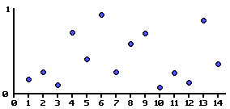
Пример графика функции шума.
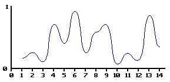
Гладкая интерполяция может помочь нам получить непрерывную функцию.
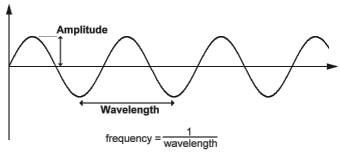
Длина волны (wavelength) - расстояние от одного пика до другого. Амплитуда (amplitude) - высота волны. Частота (frequency) = 1 / wavelength .
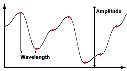
На этом графике красными точками отмечены случайные значения, полученные с помощью функции. Длина волны (wavelength) - расстояние от одной красной точки до другой. Амплитуда (amplitude) - разность между максимальными и минимальным значениями, которые может вернуть функция. Частота (frequency) = 1 / wavelenght .
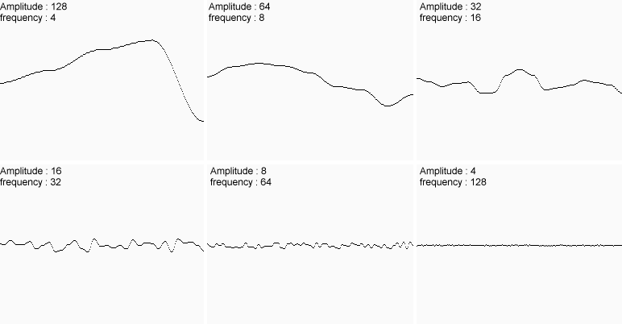
Построим несколько графиков интерполированных функций с разными значениями амплитуды и частоты - это различные октавы нашей функции шума.
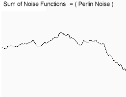
Сложим все шесть функций (октав) вместе и получим примерно следующее.
Вводится понятие "настойчивость" (persistence):
- frequency = 2i
- amplitude = persistencei
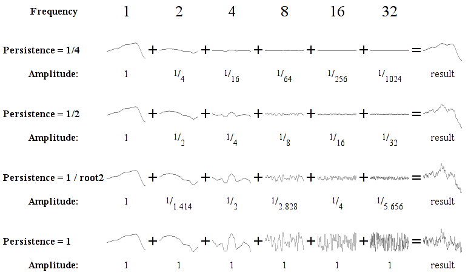
Различные октавы и их сумма при разных значения настойчивости и частоты.
- Интерполяция
У нас уже есть функция шума, которая возвращает случайные значения, чтобы поулчить более-менее реалистичный результат нам необходима интерполяция. Есть несколько подходов.Обычно функция интерполяции принимает следующие параметры:
- A и B - значения, между которыми нужно произвести интерполяцию (ru:wikipedia=способ нахождения промежуточных значений величины по имеющемуся дискретному набору известных значений).
- X - значение от 0 до 1, которое указывает в каком месте интерполируемого промежутка (между A и B) нужно взять значение. Если X = 0, то функция вернет A, если X = 1, то вернет B.
- Линейная интерполяция
Быстро, "не очень гладко"function Linear_Interpolate(a, b, x) return a*(1-x) + b*x end of function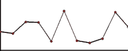
Пример линейной интерполяции.
- Интерполяция с помощью косинуса
Не так быстро как линейная, результат более симпатичный, чем при линейной интерполяции.function Cosine_Interpolate(a, b, x) ft = x * 3.1415927 f = (1 - cos(ft)) * .5 return a*(1-f) + b*f end of function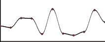
Пример интерполяции с помощью косинуса.
- Кубическая интерполяция
Не так быстро как с косинусом, результат более симпатичный, чем при интерполяции с помощью косинуса.В отличие от других функций, эта имеет пять параметров:
- v0 - точка перед A
- v1 - A
- v2 - B
- v3 - точка после B
- X - тоже самое, что и в других функциях.
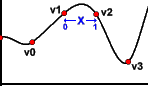
Параметры функции.
function Cubic_Interpolate(v0, v1, v2, v3,x) P = (v3 - v2) - (v0 - v1) Q = (v0 - v1) - P R = v2 - v0 S = v1 return Px^3 + Qx^2 + Rx + S end of function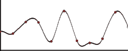
Пример кубической интерполяции.
- Сглаживание
Помимо интерполяции, для того чтобы шум не выглядил сильно случайным, к нашему шуму нужно применить некий "сглаживающий" фильтр. Сглаживание значение будет происходить на основе значений соседних точек.- 1D
function Noise(x) . . . end function function SmoothNoise_1D(x) return Noise(x)/2 + Noise(x-1)/4 + Noise(x+1)/4 end function
- 2D
function Noise(x, y) . . . end function function SmoothNoise_2D(x, y) corners = ( Noise(x-1, y-1) + Noise(x+1, y-1) + Noise(x-1, y+1) + Noise(x+1, y+1) ) / 16 sides = ( Noise(x-1, y) + Noise(x+1, y) + Noise(x, y-1) + Noise(x, y+1) ) / 8 center = Noise(x, y) / 4 return corners + sides + center end function
- Псевдокод 1D
function Noise1(integer x) x = (x<<13) ^ x; return ( 1.0 - ( (x * (x * x * 15731 + 789221) + 1376312589) & 7fffffff) / 1073741824.0); end function function SmoothedNoise_1(float x) return Noise(x)/2 + Noise(x-1)/4 + Noise(x+1)/4 end function function InterpolatedNoise_1(float x) integer_X = int(x) fractional_X = x - integer_X v1 = SmoothedNoise1(integer_X) v2 = SmoothedNoise1(integer_X + 1) return Interpolate(v1 , v2 , fractional_X) end function function PerlinNoise_1D(float x) total = 0 p = persistence n = Number_Of_Octaves - 1 loop i from 0 to n frequency = 2^i amplitude = p^i total = total + InterpolatedNoisei(x * frequency) * amplitude end of i loop return total end function
- Псевдокод 2D
function Noise1(integer x, integer y) n = x + y * 57 n = (n<<13) ^ n; return ( 1.0 - ( (n * (n * n * 15731 + 789221) + 1376312589) & 7fffffff) / 1073741824.0); end function function SmoothNoise_1(float x, float y) corners = ( Noise(x-1, y-1) + Noise(x+1, y-1) + Noise(x-1, y+1) + Noise(x+1, y+1) ) / 16 sides = ( Noise(x-1, y) + Noise(x+1, y) + Noise(x, y-1) + Noise(x, y+1) ) / 8 center = Noise(x, y) / 4 return corners + sides + center end function function InterpolatedNoise_1(float x, float y) integer_X = int(x) fractional_X = x - integer_X integer_Y = int(y) fractional_Y = y - integer_Y v1 = SmoothedNoise1(integer_X, integer_Y) v2 = SmoothedNoise1(integer_X + 1, integer_Y) v3 = SmoothedNoise1(integer_X, integer_Y + 1) v4 = SmoothedNoise1(integer_X + 1, integer_Y + 1) i1 = Interpolate(v1 , v2 , fractional_X) i2 = Interpolate(v3 , v4 , fractional_X) return Interpolate(i1 , i2 , fractional_Y) end function function PerlinNoise_2D(float x, float y) total = 0 p = persistence n = Number_Of_Octaves - 1 loop i from 0 to n frequency = 2^i amplitude = p^i total = total + InterpolatedNoisei(x * frequency, y * frequency) * amplitude end of i loop return total end function
- 1D
- Diamond square
Основная идея: мы начинаем с пустой матрицы размера 2n + 1 (n=5, 33x33; n=6, 65x54; n=7, 129x129). Устанавливаем точкам по углам равные значения (first square step). Это отправная точка для цикла, в котором задача будет постепенно разделяться на более мелкие.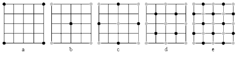
Пример с матрицей 5х5.
Далее копипаста с хабра (http://habrahabr.ru/blogs/algorithm/111538/).
Попробуем обобщить этот алгоритм для двумерной карты высот. Начнем с присвоения случайных высот четырем углам всей карты целиком и разобъем её (для удобства я предполагаю, что мы работаем с квадратной картой, причем её сторона является степенью двойки) на четыре равных квадрата. В каждом из них известно значение в одном из углов. Где взять остальные?
Всё той же интерполяцией, как и в одномерном midpoint displacement — точка в центре получается усреднением высот всех 4 угловых точек, а каждая серединная точка на стороне большого квадрата — усреднением пары точек, лежащих на концах соответствующей стороны. Осталось привнести немного шума — сдвинуть случайным образом центральную точку вверх или вниз (в пределах, пропорциональных стороне квадрата) — и можно повторять рекурсивно наши действия для полученных под-квадратиков. Всё? Всё, да не всё.
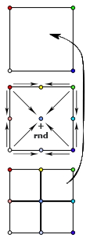
Midpoint displacement algorithm.
Это ещё не diamond-square — данный алгоритм, как правило, тоже называют алгоритмом midpoint displacement и несмотря на то, что он дает уже относительно приемлимые результаты, в получившейся картинке без особого труда можно заметить её «прямолинейную» натуру.
Алгоритм diamond-square — тот самый, который позволяет получать «настоящие» фрактальные ландшафты — отличается от двумерного midpoint displacement тем, что состоит из двух шагов. Первый — т. н. «square» — точно так же определяет центральную точку в квадрате путем усреднения угловых и добавлением собственно displacement'а — случайного отклонения. Второй же шаг — «diamond» — призван определить высоту точек, лежащих на серединах сторон. Здесь усредняются не две точки — «сверху» и «снизу» (если говорить о точках на вертикальной стороне), но и пара точек «слева» и «справа» — то есть еще две полученных на шаге «square» центральных точки. Важно заметить, что эти две высоты, которые достались нам на предыдущем шаге, должны быть уже посчитаны — поэтому обсчет нужно вести «слоями», сначала для всех квадратов выполнить шаг «square» — затем для всех ромбов выполнить шаг «diamond» — и перейти к меньшим квадратам.
Объяснения, думаю, могут показаться запутанными, поэтому советую внимательно изучить приложенные схемы — по ним должно стать яснее, высоты каких точек вычисляются на каждом этапе
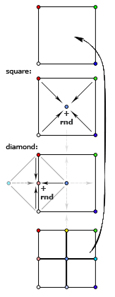
Diamond-square algorithm
Кроме необходимости использовать, скажем так, обход в ширину вместо обхода в глубину, есть ещё одна тонкость — ситуация на краях ландшафта. Дело в том, что на этапе «diamond» алгоритм использует высоту точек, которых находятся за пределами текущего квадрата и, возможно, всей карты. Как быть? Варианта два (хотя вы можете придумать и свой собственный, конечно): либо считать эти высоты равными 0 (или 1, или любой другой константе; это, кстати, удобно для погружения краев нашего ландшафта под воду), либо представить что наша плоскость свернута в тор (тороидальная планета, хм…) и пытаясь узнать высоту точки, лежащей на 64 пикселя левее левой границы карты, мы узнаем высоту точки, отстоящей на 64 точки от правой границы. Реализуется очень просто (как, впрочем, и первый вариант) — нам поможет взятие координат по модулю, равному размеру карты.
- C++ implementation
#include <cstdlib> //#include "tga.hpp" #include <iostream> #include <stdio.h> signed char scrand(signed char r = 127) { return (-r + 2 * (std::rand() % r)); } signed char** mdp(signed char** base, unsigned base_n, signed char r) { size_t n = (2 * base_n) - 1; signed char** map = new signed char*[n]; for (unsigned i = 0; i < n; ++i) map[i] = new signed char[n]; // Resize // 1 0 1 // 0 0 0 // 1 0 1 for (size_t i = 0; i < n; i += 2) { for (size_t j = !(i % 2 == 0); j < n; j += 2) { map[i][j] = base[i / 2][j / 2]; } } // Diamond algorithm // 0 0 0 // 0 X 0 // 0 0 0 for (size_t i = 1; i < n; i += 2) { for (size_t j = 1; j < n; j += 2) { signed char& map_ij = map[i][j]; signed char a = map[i - 1][j - 1]; signed char b = map[i - 1][j + 1]; signed char c = map[i + 1][j - 1]; signed char d = map[i + 1][j + 1]; map_ij = (a + b + c + d) / 4; int rv = scrand(r); if (map_ij + rv > 127 ) map_ij = 127; else if(map_ij + rv < -128) map_ij = -128; else map_ij += rv; } } // Square algorithm // 0 1 0 // 1 0 1 // 0 1 0 for (size_t i = 0; i < n; ++i) { for (size_t j = (i % 2 == 0); j < n; j += 2) { signed char& map_ij = map[i][j]; // get surrounding values signed char a = 0, b = a, c = a, d = a; if (i != 0) a = map[i - 1][j]; if (j != 0) b = map[i][j - 1]; if (j + 1 != n) c = map[i][j + 1]; if (i + 1 != n) d = map[i + 1][j]; // average calculation if (i == 0) map_ij = (b + c + d) / 3; else if (j == 0) map_ij = (a + c + d) / 3; else if (j + 1 == n) map_ij = (a + b + d) / 3; else if (i + 1 == n) map_ij = (a + b + c) / 3; else map_ij = (a + b + c + d) / 4; int rv = scrand(r); if (map_ij + rv > 127 ) map_ij = 127; else if(map_ij + rv < -128) map_ij = -128; else map_ij += rv; } } return map; } signed char** createnoise(unsigned n) { signed char** noise = new signed char*[n]; for (unsigned i = 0; i < n; ++i) { noise[i] = new signed char[n]; for (unsigned j = 0; j < n; ++j) noise[i][j] = scrand(); } return noise; } int main() { /////// Heightmap generation const unsigned n = 512; signed char** final = new signed char*[n]; for (unsigned i = 0; i < n; ++i) { final[i] = new signed char[n]; for (unsigned j = 0; j < n; ++j) final[i][j] = scrand(); } for (unsigned i = 1; i < 6; ++i) final = mdp(final, n, 64 / i); // Dump heightmap to TARGA image { unsigned char* imgdta = new unsigned char[n * n]; for (size_t i = 0; i < n; ++i) { for (size_t j = 0; j < n; ++j) { imgdta[(i * n) + j] = 128 + final[i][j]; } } char file_name[] = "x_iter.tga"; FILE *fp = fopen( file_name, "wb" ); const unsigned char header[] = { 0,0,3,0,0,0,0,0,0,0,0,0,0,2,0,2,8,32 }; fwrite( header, sizeof(header), 1, fp ); fwrite( imgdta, n*n, 1, fp ); fclose( fp ); //tga_image mytga = {n, n, 8, imgdta}; //save_tga_image(file_name, mytga); delete[] imgdta; } return 0; }
- C++ implementation
- simplex
- TODO Perlin Noise ((частичный перевод - http://freespace.virgin.net/hugo.elias/models/m_perlin.htm)
- Diamond square - http://habrahabr.ru/blogs/algorithm/111538/
- Полезные ссылки
- Эррозия
- Реки
- Горы
- BSP generation - http://doryen.eptalys.net/articles/bsp-dungeon-generation/
- Pathfinding
- A*
- Dijkstra - http://habrahabr.ru/blogs/algorithm/111361/
- A*
- Field of View
- basic raycasting
- recursive shadowcasting
- diamond raycasting
- precise permissive fov
- restrictive shadowcasting a.k.a. MRPAS
- basic raycasting
2.3.7 Биомы и климат
- Minecraft

График температуры/осадков в зависимости от биома.
Примерная таблица биомов Название Оказываемые эффекты Коментарий Джунгли Болото Сезонный лес Лес Саванна Тайга Пустыня Равнина Тундра Горы
- DF
- Засушливые (Аридные)
- Arctic Ocean (Холодный океан)
- Badlands (Бесплодные земли)
- Glacier (Ледник)
- Mountain (Горы)
- Rocky wasteland (Каменистая пустошь)
- Sand desert (Песчанная пустыня)
- Tundra (Тундра)
- Taiga (Тайга)
- Умеренные
- Temperate Broadleaf forest (Умеренный лиственный лес)
- Temperate Conifer forest (Умеренный хвойный лес)
- Temperate Grassland (Умеренные луга)
- Temperate Freshwater lake (Умеренное пресноводное озеро)
- Temperate Freshwater marsh (Умеренное пресноводное болото)
- Temperate Freshwater swamp (Умеренная пресноводная топь)
- Temperate Ocean (Умеренный океан)
- Temperate Saltwater marsh (Умеренное солёное болото)
- Temperate Saltwater swamp (Умеренная солёная топь)
- Temperate Savanna (Умеренная саванна)
- Temperate Shrubland (Умеренное мелколесье)
- Тропические
- Tropical Dry Broadleaf forest (Тропический сухой лиственный лес)
- Tropical Wet Broadleaf forest (Тропический сырой лиственный лес)
- Tropical Conifer forest (Тропический хвойный лес)
- Tropical Freshwater marsh (Тропическая пресноводная топь)
- Tropical Grassland (Тропические луга)
- Tropical Ocean (Тропический океан)
- Tropical Savanna (Тропическая саванна)
- Tropical Shrubland (Тропическое мелколесье)
- Засушливые (Аридные)
- Terraria
- Леса - Для посадки деревьев необходимы жёлуди, которые падают с деревьев, когда вы их рубите. Замкнутый круг, не так ли? Также, жёлуди можно купить у Дриады. В лесной территории можно найти подземные пещеры, размеры которых не больше 100 футов в глубину
- Пустыни - На самом деле, в пустынях нет ничего интересного, ведь они совершенно бесплодны.
- Океан - На обоих краях каждой карты находятся песчаные пляжи, за которыми расположены огромные массы воды. Чем дальше идёт игрок, тем глубже становится дно. Исследования океана без умения плавать — практически самоубийство, так как можно просто напросто утонуть.
- Подземелье - Подземелье состоит из трёх слоёв (уровней): слой грязи, скалистый слой, каменный слой.
- Парящие острова - массы земли, расположенные в небе (magic?!?).
- Искажение — биом, отличительной особенностью которого является способность к распространению. В большинстве случаев, в мире есть 2-3 Искажения. Искажение спаунит (порождает) высокоуровневых монстров независимо от времени суток, его следует избегать в начале игры. Тёмные блоки (покрытые Искажением) можно очищать ударом оружия или с помощью очистительного порошка. Искажение распространяется только по блокам травы и грязи, так что остановить его можно путём размещения какого-либо блока (кроме грязи) или посадкой подсолнечника. (Подсолнечники можно купить у Дриады или же просто найти) Игрок может найти Семена Искажения, сажая которые вы создадите собственное Искажение (magic?!?).
- Метеорит - послее того, как вы разобьёте Теневую сферу, в планету может врезаться метеорит. (Метеорит может прилететь, даже если вы ничего не разбивали. Вот так.) Метеорит — это маленький по площади, но довольно опасный для низкоуровневых игроков биом. Он состоит из метеоритной руды, высокоуровневого материала, который наносит урон при контакте, если у игрока нет Обсидианового черепа.
- Пещерные джунгли - Подземные джунгли во многом схожи с обычными подземельями, например, в них тоже присутствуют тупики. Но есть и различия: подземные джунгли покрыты растениями (неожиданно?), в них можно найти уникальные предметы, которые находятся в Храмах Джунгей (Jungle Shrines) — небольших зданиях, сделанных из золотых блоков. Найти джунгли не составить труда — просто копайте (хотя в больших мирах придётся покапать намного дольше, чем в средних и маленьких). Очень часто Пещерные Джунгли встречаются рядом с Искажением.
- Данж — это огромное здание, находящиеся недалеко от "края" мира, охватывающее множество слоёв вглубь. Данжы заполнены сундуками с сокровищами и уникальными предметами (например: водяная свеча, книги, цепной фонарь, и т.д.) В маленьких и средних мирах Подземелья могут "разрезать" Ад на несколько частей, тем самым обеспечивая удобный к нему доступ.
- Преисподняя — это биом, который находится в "адском" уровне (ниже, чем уровень моря, приблизительно, на 4500 футов). Вы доберётесь до него после того, как прокопаетесь через третий слой Подземелья (пещеры) — каменный слой. Преисподняя отличается от подземелья иным фоном, сильными врагами и огромным количеством лавы, лавы и ещё раз лавы. Сундуки в Преисподней содержат более редкие артефакты, чем все другие, которые встречаются вам в мире.
- Классификации биомов
Climate is a major factor determining the distribution of terrestrial biomes. Among the important climatic factors are:- Latitude: Arctic, boreal, temperate, subtropical, tropical
- Humidity: humid, semihumid, semiarid, and arid
seasonal variation: Rainfall may be distributed evenly throughout the year or be marked by seasonal variations. dry summer, wet winter: Most regions of the earth receive most of their rainfall during the summer months; Mediterranean climate regions receive their rainfall during the winter months.
- Elevation: Increasing elevation causes a distribution of habitat
types similar to that of increasing latitude.
http://en.wikipedia.org/wiki/Biome#Biome_classification_schemes
- Климат
- Температура
- Погода
- Дождь
- Снег
- Дождь
2.4 Время
2.4.1 Система ходов, "время" и боевая система
Скорость у разных мобов и игроков может быть разная и это надо как-то учитывать. http://roguebasin.roguelikedevelopment.org/index.php/Monster_attacks_in_a_structured_list http://roguebasin.roguelikedevelopment.org/index.php/Monster_attacks http://roguebasin.roguelikedevelopment.org/index.php/Time_Systems
2.4.2 Времена года (связано с биомами и климатом)
2.4.3 День / ночь.
2.5 Объекты
У любого предмета могут быть "общие" свойства и "уникальные". Общие одинаковы для всех объектов данного типа.
2.5.1 Набросок классификации
- Объект
- Зелья
- Свитки
- Книги
- "Светильники"
- Еда
- Оружие
- Броня
- Бижутерия
- Волшебные палочки
- Посохи
2.6 Строительство
2.7 Раскопки
2.8 Существа
2.8.1 AI
Простой конечный автомат состояний: атака, идти куда-нибудь (куда - зависит от монстра, возможно там должно быть что-то интеллектуальное), отдых, отступать, красться и другое. К состояниям приделать ряд условий, выполнив которые можно перейти в другое состояние.
- Направление движения
Можно выделить несколько подходов:- Простое движение в направлении противника без просчета всего пути (выполняется только в условиях видимости противника или если известно последнее место пребывания противника).
- Обход препятствий и просчет всего пути движения (только для "умных" монстров).
- Монстр может искать по области видимости игрока, если монстр не видит самого игрока, но видит тайл, который видит игрок, то монстр двигается в его сторону.
- А* и алгоритм Дейкстры - только раз в несколько ходов, для экономии вычислительных ресурсов.
2.8.2 Line of sight
2.8.3 Field of vision
2.8.4 Field of noise
Возможно отслеживать по издаваемым звукам. Определенное действие издает звук определенный величины (амплитуда), который слышно на определенном удалении. Возможно у монстров будет характеристика отвечающая за чуткость звука. Например звук ударов молота о наковальню слышно за 50 тайлов, монстр с идеальным слухом услышит этот звук, а монстр с более слабым слухом - не услышит.
2.8.5 Field of smell
Аналогично с шумом, но только для запахов. Чтобы сильно не загружать вычислениями, такое можно применять только для специфичных и характерно "пахнущих" предметов или только для монстров, которые имеют острых нюх.
2.8.6 Генетика монстров и нейронные сети
Возможно следует использовать генетические алгоритмы для усовершенствования характеристик монстров. Нейронные сети можно применить для принятия решений на основе накопленных знаний в данной игровой ситуации (подробнее тут - http://roguebasin.roguelikedevelopment.org/index.php/Roguelike_Dev_FAQ#How_do_you_add_variety_to_your_monsters.3F).
2.8.7 Организация памяти для хранения, подсчет ссылок
2.9 Механизмы и аппараты
2.10 Вещества / материалы
2.10.1 Жидкости
2.10.2 Газы
2.10.3 Метал
2.10.4 Ювелирные изделия
2.10.5 Минералы
2.10.6 Драгоценные камни
2.11 Цивилизации, города, поселки - генерация
2.12 Квесты
2.12.1 Типы квестов
- Убей Х
- Захвати X живым
- Найди X
- Встреться с X
- Принеси для X определенное количество Y
- Тоже самое что и 1.-5. только на перегонки с противником Z
- Поговорить Х
2.12.2 Еще одна классификация квестов
When I was browsing through the rec.games.roguelike.development newsgroup I found a thread concerning quests. Below is the essential parts of the thread:
THE ADVENTURER
- Reach a certain location
- Map a location and bring the map to a person or location
- Find n objects and bring them to a person or location
- Find or catch n creatures and bring them to a person or location
- Something strange is going on. Track the source and stop it
- Escape from the trap (dungeon)
THE HERO
- Get n followers (of a specific type)
- Gather forces (beings and/or objects) and lead/bring them to a person or location
THE WARRIOR
- Kill n monsters (of a certain type)
- Clear a location from monsters
THE MERCHANT
- Manage a business to get beyond a certain limit (time/money)
COMPETING WITH THE ENEMY/ARCHENEMY
- Reach a location before the archenemy
- Get an object from a person before the archenemy
- Get an object from a location before the archenemy
- Find an object before the archenemy
- Steal an object from the enemy
PROTECT FROM THE ENEMY/ARCHENEMY
- Protect a location from the enemy (until civilians have escaped)
- Protect a person from the enemy
- Find and protect a person from the enemy
- Guide/protect a person on the way from one location to another
Try to vary the number of ways in which the PC can enter into quests. It can be so much more interesting to be travelling the countryside and hear a maiden's wails than to be told exactly what the quest is & where to go, etc. by some 'questmonger' in town.
3 Полезная инфа
3.1 40 механик для социальных игр - http://habrahabr.ru/blogs/social_networks/114725/
Разработчик игр Раф Костер (Raph Koster) составил всеобъемлющий список базовых правил, на которых основаны социальные отношения в играх (мультиплеер, параллельная игра и т.д.). Эти правила для разработчиков игры заменяют азбуку. Во многом они пересекаются с принципами игровой механики, которые уже обсуждались на Хабре.
Раф Костер приобрёл известность как создатель дизайна Ultima Online и креативный директор проекта Star Wars Galaxies, после чего основал собственную студию.
Данный список является кратким конспектом презентации Костера (190 слайдов).
- Помощь. Простейшая форма мультиплеера — это обычные советы и помощь. Насколько хороши ваши каналы коммуникации? Помощь — это строительный материал всего социального геймплея.
- Статус. Квантификация достижений. Сохранение их в базе данных.
- Гонки. Первый пользователь, который достигает цели, побеждает. На удивление редко встречается. Почему никто не использует гонку для завершения уровня? Вы можете использовать это в сетевых настройках. Социальные игры не тяготеют к гонкам.
- Таблицы лидеров. Все соревнуются асинхронно, параллельно с сохранением истории. Мы видим это в барах.
- Турниры. Разбиение (bracketing) пользователей на группы. Социальные игры склоняются к использованию брекетинга для простого PvP, тогда как он достоин большего.
- Сбор цветов. Вы конкурируете за ресурсы, на постоянно появляются новые.
- Съедение точек. Я съел, ты нет. Потребление ресурсов с нулевой
суммой. 8: Перетягивание каната (tug-of-war). Я могу взять твои вещи, а ты можешь мои. Победитель и проигравший.
- Гандикаппинг. Искусственное уравнивание статуса для обеспечения более равного соревнования.
- Секреты. В теории игр — недостаточная информация. Знание является ценностью. Перетягивание каната. Раздачи карт.
- Последний герой. Мультиплеер до смерти, пока не останется победитель.
- Ставки. Промежуточный статус. Твоя ставка, ты забираешь вещи соперника (деньги) и у кого в итоге остаётся вещь, выигрывает. Где тихие аукционы в социальных играх?
- Ложь. Обман и блеф. Обман работает только против другого игрока, не компьютера. Дезинформация становится игровым приёмом, который даёт преимущество.
- Ставки третьей стороны. Здесь конкуренты участвуют в аукционе за ресурсы третьей стороны.
- Дилемма заключённого. У партнёров нет полной информации, но они в одной команде. Если один сдаётся, оба в проигрыше. Если они держатся вместе, то добиваются успеха. Ты не знаешь, будет ли напарник держаться.
- Кригшпиль. Военная стратегия в виде настольной игры, впервые была использована в 1812 году в Прусской армии: Dungeonmaster, Gamemaster. Судья следит за правилами, Gamesmaster направляет действие, игру. Сейчас мы не делаем слишком много такого управления в социальных играх, но могли бы. В основном действием игры управляют судьи, хотя эту роль можно переложить на гейммастера.
- Роли. Специализация ведёт к появлению различных игр внутри одной группы. Чрезвычайно редко используется в современных играх, редкое исключение — Treasure Isle.
- Объединение в группы и смена ролей внутри групп. Как в «Мафии» один из партнёров неожиданно может стать хищником.
- Ритуалы. Церемонии играют важную роль в человеческой культуре: рождение, свадьба, смерть, повышение уровня внутри игры (выпуск из школы, получение диплома, получение работы), календарные праздники, религиозные праздники.
- Подарки. Тесно связаны с предыдущим пунктом, встречаются практически во время каждого ритуала. Представляют собой передачу вещей от одного игрока к другому для повышения его статуса.
- Взаимность. Игроки отправляют подарок, который им нравится, потому что ожидают его возврата (где кнопка «Вернуть подарок»?).
- Наставники. Обучение человека или передача ему важных знаний. Он получает знания, вы получаете социальный статус как наставник. Укрепляются социальные связи в группе.
- Самовыражение. Демонстрация своего статуса через редкие аксессуары.
- Изгнание из группы через отказ в общих ресурсах.
- Доверие. Степень доверия в зависимости от положения нода в социальном графе или кластере. Прямая связь даёт максимальное доверие. Если один человек максимально доверяет двум людям в кластере, но те не связаны друг с другом напрямую, то между ними доверие существует, но гораздо слабее.
- Гильдии, кланы. Чрезвычайно эффективная структура, объединяющая несколько социальных кластеров. В данный момент в социальных играх слабо используются структуры из сотен и тысяч участников.
- Эксклюзивность. Исходя из сегрегации и геноцида известно, что людям свойственно выделять внутри сообщества элитные группы, обладающие эксклюзивным доступом к избранным вещам. VIP-клубы.
- Гильдия против гильдии. Мы знаем, как большие родственные группы любят уничтожать друг друга. Соревнование. Сражение. Конкуренция.
- Торговля. Формализация выгодных отношений между слишком удалёнными узлами в сети.
- Выборы. Политика — величайшая многопользовательская игра, изобретённая человечеством.
- Репутация, влияние и почёт. Нужно разработать микроплатежи для социальной валюты, чтобы отправитель мог поставить +1, а получатель накапливать эти статусы.
- Общественные вещи. Это похоже на дилемму заключённого, но только в отношении к многим пользователям. Большинство общественных ресурсов не уникальны и могут потребляться всеми (например, чистый воздух).
- Трагедия общин, если ресурсы уникальны и могут быть присвоены кем-то, тогда все остальные остаются в проигрыше.
- Коммьюнити. Ситуация, когда сами пользователи становятся фишками в игре.
- Стратегические гильдии. Объединении в большие группы для решения очень сложных загадок.
- Командная работа. Совместные усилия людей всегда больше, чем работа тех же людей поодиночке.
- Арбитраж. Переходя к экономическим моделям игры, нужно допустить существование арбитража, когда возникают неравномерные количества товара в игре и существует способ оценки и обмена таким товаром.
- Каналы поставки. Каналы обмена товаров и торговых путей.
- Пользовательский контент. Хорошие инструменты для этого: форумы, редакторы изображений, игровые карты, свадьбы и так далее.
- Грифинг. Виртуальная социопатия. Смена правил игры самими игроками и появление новых игровых вселенных.
4 Хаотичный список фич и идей
4.1 Dwarfscript
Скриптовый язык для написания сценариев работы дварфов в крепости.
4.2 Заговоры
Недовольные жители могут объединиться и объявить забастовку, устроить заговор, заняться вредительством, распространять хоас и тантрум.
4.3 Дварфийский язык
- http://www.stormnexus.org/Dwarven_Language
- http://www.guildsite.com/dawi/language.htm
- http://www.fantasist.net/dwarven.shtml
- http://www.scribd.com/doc/17817661/dd-3rd-Edition-Dungeons-and-Dragons-Dwarven-Dictionary
- http://www.angelfire.com/pro/demon_1/dwarven_to_common_dictionary.htm
- http://www.santharia.com/languages/thergerim/thergerim.htm
4.4 Multilevel strategy
Стратегия на нескольних уровнях/слоях. Приказы и задания отдаются в разных масштабах, причем произвольно регулируемым.
4.5 Фича с астрологией для игры
Игра связана с астрономией. Небо может содержать подсказки, если уметь их читать (определенные созвездия могут играть роль подсказок). Нужно "читать небо". По миру разбросаны книги с описанием созвездий. Созвездия могут генерироваться случайным образом. Несответствие названия и формы - мелочь. Генератор созвездий. Чтобы найти созвездие нужно последовательно соединить все звезды в созвездии (построить граф из точек).
4.6 Кодекс чести для игры
Реализовать в игре "кодекс чести" / "список смертных грехов". Наборы правил, хуков, описывающие определенные действия, при выполнении которых повышается/теряется статус.
4.7 Генератор гербов / Калькулятор
Сбор параметров по поселению и генерация релевантного герба на их основе. Можно будет оценивать силы противника по гербу. Ряд параметров отображается в герб.
4.8 Генерируемые квесты
Выделить типы квестов. Например:
- борьба за ресурс;
- дэдлоки;
- глобальные хуки.
Высокии абстракции для генерации квестов.
4.9 Список основных сюжетов для создания квестов
Известный писатель Хорхе Луис Борхес заявлял, что существует всего четыре сюжета и, соответственно, четыре героя, которых он и описал в своей новелле «Четыре цикла».
Самая старая история - история об осажденном городе, который штурмуют и обороняют герои. Защитники знают, что город обречен и сопротивление бесполезно. Это история о Трое, и главный герой - Ахилл, знает, что погибнет, так и не увидев победы. Герой-мятежник, сам факт существования которого - вызов окружающей реальности. Кроме Ахилла, героями этого сюжета являются Зигфрид, Геракл, Сигурд и другие.
Вторая история - о возвращении. История Одиссея, скитавшегося по морям десять лет в попытке вернуться домой. Герой этих историй - человек отверженный обществом, бесконечно блуждающий в попытках найти себя - Дон Кихот, Беовульф.
История третья - о поиске. Эта история чем-то похожа на вторую, но в данном случае герой не является отверженным и не противопоставляет себя обществу. Наиболее известный пример такого героя - Ясон, плывущий за золотым руном.
История четвертая - о самоубийстве бога. Атис калечит и убивает себя, Один жертвует собой Одину, самому себе, девять дней вися на дереве, пригвожденный копьем, римские легионеры распинают Христа. Герой «гибели богов» - теряющий или обретающий веру, находящийся в поиске веры - Заратустра, булгаковский Мастер, Болконский.
Кристофер Букер в своей книге «The Seven Basic Plots: Why We Tell Stories» ("Семь основных сюжетов: почему мы рассказываем истории") описал семь базовых сюжетов, на основе которых, по его мнению, написаны все книги в мире.
- «Из грязи в князи» - название говорит само за себя, самый яркий пример, знакомый всем с детства - Золушка. Герои - обыкновенные люди, открывающие в себе что-то необычное, благодаря собственным усилиям или по стечению обстоятельств оказывающиеся «на вершине».
- «Приключение» - трудное путешествие в поисках труднодостижимой цели. По мнению Букера, сюда попадают и Одиссей, и Ясон, кроме того, в эту категорию попадают и «Копи царя Соломона», и «Вокруг света за восемьдесят дней».
- «Туда и обратно». В основе сюжета попытки героя, вырванного из привычного мира, вернуться домой. Это и «Робинзон Крузо», и «Алиса в зазеркалье», и многие другие.
- «Комедия» - Это не просто общий термин, это определенный вид сюжета, который развивается по собственным правилам. В эту категорию попадают все романы Джейн Остин.
- «Трагедия» - кульминацией является гибель главного героя из-за каких либо недостатков характера, обычно любовной страсти или жажды власти. Это, прежде всего, «Макбет», «Король Лир» и «Фауст».
- «Воскресение» - герой находится под властью проклятия или темных сил, и из этого состояния его выводит чудо. Яркий пример этого сюжета также знаком всем с детства - Спящая красавица, пробужденная поцелуем принца.
- «Победа над чудовищем» - из названия ясно, в чем заключается сюжет - герой сражается с монстром, побеждает его и получает «приз» - сокровища или любовь. Примеры: Дракула, Давид и Голиаф.
Около ста лет назад драматург Жорж Польти составил свой список сюжетов из тридцати шести пунктов (кстати, первым число тридцать шесть было предложено еще Аристотелем и намного позднее поддержано Виктором Гюго). Тридцать шесть сюжетов и тем Польти охватывают, в основном, драматургию и трагедии. Вокруг этого списка велись споры, его неоднократно критиковали, но опротестовать само число 36 никто не пытался.
- Мольба
- Спасение
- Месть, преследующая преступление
- Месть близкому за близкого
- Затравленный
- Внезапное несчастье
- Жертва кого-либо
- Бунт
- Отважная попытка
- Похищение
- Загадка
- Достижение
- Ненависть между близкими
- Соперничество между близкими
- Адюльтер, сопровождающийся убийством
- Безумие
- Фатальная неосторожность
- Невольное кровосмешение
- Невольное убийство близкого
- Самопожертвование во имя идеала
- Самопожертвование ради близких
- Жертва безмерной радости
- Жертва близким во имя долга
- Соперничество неравных
- Адюльтер
- Преступление любви
- Бесчестие любимого существа
- Любовь, встречающая препятствия
- Любовь к врагу
- Честолюбие
- Борьба против бога
- Неосновательная ревность
- Судебная ошибка
- Угрызения совести
- Вновь найденный
- Потеря близких
Споры о том, сколько и каких сюжетов существует в литературе, ведутся до сих пор. Предлагаются разные варианты, разные цифры, но исследователи не могут прийти к единому мнению. В принципе каждый человек может найти свои варианты этого списка и, при должном желании, избавившись от всего лишнего, оставив только «скелет», найти подтверждение своей версии во всех произведениях мировой литературы.